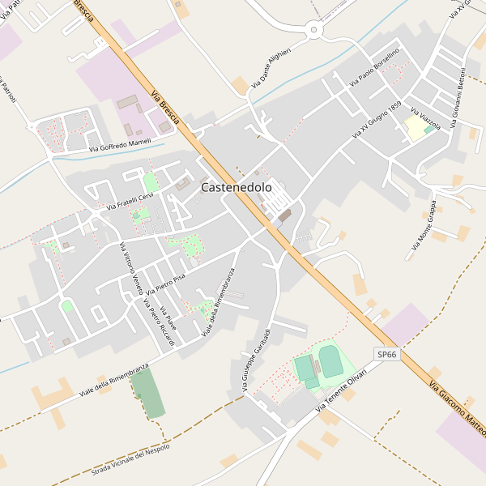

La storia di Castenedolo affonda le sue radici nella preistoria, quando le sue caratteristiche colline emersero dalla pianura padana, diventando celebri a fine Ottocento per il controverso ritrovamento archeologico dell'Uomo di Castenedolo.
Il borgo, il cui nome deriva probabilmente dagli antichi boschi di castagno che ricoprivano la zona, si è sviluppato nei secoli successivi come un operoso centro rurale. Dotato di propri statuti comunali già nel XV e XVII secolo, il paese ha legato a lungo il proprio destino politico a quello della vicina Brescia e della Repubblica di Venezia, basando la sua economia sull'agricoltura e sulla viticoltura. Durante il Risorgimento il territorio visse in prima linea le guerre d'indipendenza, trasformando le proprie strutture in ospedali militari nel 1859. Tra la fine dell'Ottocento e l'inizio del Novecento, Castenedolo ha avviato un importante processo di modernizzazione sociale con la nascita dei primi servizi per l'infanzia a sostegno delle famiglie contadine, fino a trasformarsi nel comune dinamico e produttivo che conosciamo oggi.
La storia d'Italia è un cammino millenario che inizia con l'unificazione della penisola sotto l'Impero Romano, la cui caduta nel 476 d.C. apre la strada a secoli di profonde frammentazioni politiche. Durante il Medioevo e il Rinascimento, nonostante la divisione in piccoli Stati, Comuni e Signorie, l'Italia si afferma come il centro culturale, artistico ed economico del mondo intero, pur subendo per lungo tempo il controllo delle grandi potenze straniere. La svolta decisiva arriva nell'Ottocento con il Risorgimento, il movimento d'indipendenza che porta alla proclamazione del Regno d'Italia il 17 marzo 1861. Nel Novecento, dopo aver vissuto il dramma della Prima Guerra Mondiale e il ventennio della dittatura fascista, il Paese risorge dalle macerie del secondo conflitto mondiale e, grazie al referendum del 2 giugno 1946, diventa una Repubblica, trasformandosi in una delle principali economie democratiche e industriali del pianeta.
